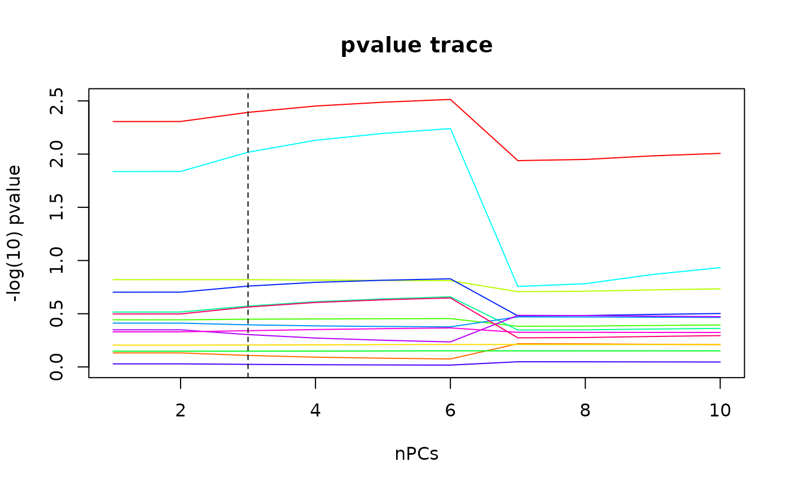

pvals.RdFunctions for computing, printing and plotting p-values for ridgeLinear and ridgeLogistic models. The p-values are computed using the significance test of Cule et al (2011).
pvals(x, ...)
# S3 method for ridgeLinear
pvals(x, ...)
# S3 method for ridgeLogistic
pvals(x, ...)
# S3 method for pvalsRidgeLinear
print(x, digits = max(3, getOption("digits") - 3),
signif.stars = getOption("show.signif.stars"), all.coef = FALSE, ...)
# S3 method for pvalsRidgeLogistic
print(x, digits = max(3, getOption("digits") - 3),
signif.stars = getOption("show.signif.stars"), all.coef = FALSE, ...)
# S3 method for pvalsRidgeLinear
plot(x, y = NULL, ...)
# S3 method for pvalsRidgeLogistic
plot(x, y = NULL, ...)For the pvals methods, an object of class "ridgeLinear" or "ridgeLogistic", typically from a call to "linearRidge" or "logisticRidge". For the print and plot methods, an object of class "pvalsRidgeLinear" or "pvalsRidgeLogistic", typically from a call to "pvals".
minimum number of significant digits to be used for most numbers
logical; if TRUE, P-values are additionally encoded
visually as significance stars in order to help scanning of
long coefficient tables. It defaults to the
show.signif.stars slot of options.
Logical. Should p-values for all the ridge regression parameters be printed, or only the one from the ridge parameter chosen using the method of Cule et al (2012)
Dummy argument for compatibility with the default plot method. Ignored.
further arguments to be passed to or from other methods
Standard errors, test statistics and p-values are computed using coefficients and data on the scale that was used to fit them. If the coefficients were standardized before the model was fitted, then the p-values relate to the scaled data.
For the pvals methods, an object of class "pvalsRidgeLinear" or "pvalsRidgeLogistic" which is a list with elements
The (scaled) regression coefficients
The standard errors of the regression coefficients
The test statistic of the regression coefficients
The p-values of the regression coefficients
Were the data scaled before the regression coefficients were fitted?
For the print methods, the argument x is returned invisibly.
Significance testing in ridge regression for genetic data. Cule, E. et al (2011) BMC Bioinformatics, 12:372
linearRidge, logisticRidge
data(GenBin)
mod <- logisticRidge(Phenotypes ~ ., data = as.data.frame(GenBin))
pvalsMod <- pvals(mod)
print(pvalsMod)
#>
#> lambda 0.124401 chosen automatically using 3 PCs
#>
#> Estimate (scaled) Std. Error (scaled) t value (scaled) Pr(>|t|)
#> SNP1 1.91437 0.66608 2.874 0.00405 **
#> SNP2 0.26964 0.96394 0.280 0.77969
#> SNP3 -0.49181 0.99903 -0.492 0.62252
#> SNP4 -1.42213 0.99100 -1.435 0.15127
#> SNP5 0.91017 0.98646 0.923 0.35618
#> SNP6 -0.35550 0.95942 -0.371 0.71098
#> SNP7 -1.02201 0.92269 -1.108 0.26802
#> SNP8 1.72926 0.66767 2.590 0.00960 **
#> SNP9 -0.79517 0.94886 -0.838 0.40202
#> SNP10 -1.21440 0.89306 -1.360 0.17389
#> SNP11 0.06779 0.99958 0.068 0.94593
#> SNP12 0.65179 0.95838 0.680 0.49644
#> SNP13 -0.70526 0.94739 -0.744 0.45662
#> SNP14 -0.99072 0.90485 -1.095 0.27356
#> ---
#> Signif. codes: 0 ‘***’ 0.001 ‘**’ 0.01 ‘*’ 0.05 ‘.’ 0.1 ‘ ’ 1
print(pvalsMod, all.coef = TRUE)
#>
#> lambda 0.083791, computed using 1 PCs
#>
#> Estimate (scaled) Std. Error (scaled) t value (scaled) Pr(>|t|)
#> SNP1 2.14691 0.76386 2.811 0.00494 **
#> SNP2 0.39122 1.16909 0.335 0.73790
#> SNP3 -0.58906 1.20143 -0.490 0.62392
#> SNP4 -1.75062 1.21999 -1.435 0.15130
#> SNP5 1.11458 1.21938 0.914 0.36069
#> SNP6 -0.43013 1.16207 -0.370 0.71127
#> SNP7 -1.16609 1.13668 -1.026 0.30495
#> SNP8 1.87212 0.76654 2.442 0.01459 *
#> SNP9 -1.00024 1.15694 -0.865 0.38728
#> SNP10 -1.41523 1.10046 -1.286 0.19843
#> SNP11 0.09701 1.19637 0.081 0.93537
#> SNP12 0.88560 1.16590 0.760 0.44750
#> SNP13 -0.84255 1.16081 -0.726 0.46794
#> SNP14 -1.11270 1.11440 -0.998 0.31805
#> ---
#> Signif. codes: 0 ‘***’ 0.001 ‘**’ 0.01 ‘*’ 0.05 ‘.’ 0.1 ‘ ’ 1
#>
#> lambda 0.084022, computed using 2 PCs
#>
#> Estimate (scaled) Std. Error (scaled) t value (scaled) Pr(>|t|)
#> SNP1 2.14537 0.76319 2.811 0.00494 **
#> SNP2 0.39029 1.16764 0.334 0.73819
#> SNP3 -0.58838 1.20003 -0.490 0.62392
#> SNP4 -1.74823 1.21829 -1.435 0.15129
#> SNP5 1.11308 1.21764 0.914 0.36065
#> SNP6 -0.42959 1.16064 -0.370 0.71128
#> SNP7 -1.16513 1.13512 -1.026 0.30469
#> SNP8 1.87134 0.76587 2.443 0.01455 *
#> SNP9 -0.99873 1.15545 -0.864 0.38739
#> SNP10 -1.41386 1.09892 -1.287 0.19824
#> SNP11 0.09679 1.19503 0.081 0.93545
#> SNP12 0.88387 1.16443 0.759 0.44782
#> SNP13 -0.84156 1.15928 -0.726 0.46788
#> SNP14 -1.11194 1.11285 -0.999 0.31771
#> ---
#> Signif. codes: 0 ‘***’ 0.001 ‘**’ 0.01 ‘*’ 0.05 ‘.’ 0.1 ‘ ’ 1
#>
#> lambda 0.124401, chosen automatically, computed using 3 PCs
#>
#> Estimate (scaled) Std. Error (scaled) t value (scaled) Pr(>|t|)
#> SNP1 1.91437 0.66608 2.874 0.00405 **
#> SNP2 0.26964 0.96394 0.280 0.77969
#> SNP3 -0.49181 0.99903 -0.492 0.62252
#> SNP4 -1.42213 0.99100 -1.435 0.15127
#> SNP5 0.91017 0.98646 0.923 0.35618
#> SNP6 -0.35550 0.95942 -0.371 0.71098
#> SNP7 -1.02201 0.92269 -1.108 0.26802
#> SNP8 1.72926 0.66767 2.590 0.00960 **
#> SNP9 -0.79517 0.94886 -0.838 0.40202
#> SNP10 -1.21440 0.89306 -1.360 0.17389
#> SNP11 0.06779 0.99958 0.068 0.94593
#> SNP12 0.65179 0.95838 0.680 0.49644
#> SNP13 -0.70526 0.94739 -0.744 0.45662
#> SNP14 -0.99072 0.90485 -1.095 0.27356
#> ---
#> Signif. codes: 0 ‘***’ 0.001 ‘**’ 0.01 ‘*’ 0.05 ‘.’ 0.1 ‘ ’ 1
#>
#> lambda 0.165006, computed using 4 PCs
#>
#> Estimate (scaled) Std. Error (scaled) t value (scaled) Pr(>|t|)
#> SNP1 1.73393 0.59442 2.917 0.00353 **
#> SNP2 0.19889 0.82410 0.241 0.80929
#> SNP3 -0.42460 0.85651 -0.496 0.62009
#> SNP4 -1.20672 0.84349 -1.431 0.15254
#> SNP5 0.77687 0.83785 0.927 0.35381
#> SNP6 -0.30635 0.82134 -0.373 0.70916
#> SNP7 -0.91311 0.78356 -1.165 0.24388
#> SNP8 1.59447 0.59546 2.678 0.00741 **
#> SNP9 -0.66518 0.80971 -0.822 0.41136
#> SNP10 -1.06833 0.76090 -1.404 0.16031
#> SNP11 0.05053 0.85891 0.059 0.95309
#> SNP12 0.50729 0.81800 0.620 0.53515
#> SNP13 -0.61471 0.80546 -0.763 0.44536
#> SNP14 -0.89036 0.77040 -1.156 0.24780
#> ---
#> Signif. codes: 0 ‘***’ 0.001 ‘**’ 0.01 ‘*’ 0.05 ‘.’ 0.1 ‘ ’ 1
#>
#> lambda 0.198016, computed using 5 PCs
#>
#> Estimate (scaled) Std. Error (scaled) t value (scaled) Pr(>|t|)
#> SNP1 1.6123 0.5479 2.943 0.00325 **
#> SNP2 0.1607 0.7387 0.218 0.82776
#> SNP3 -0.3831 0.7680 -0.499 0.61789
#> SNP4 -1.0774 0.7551 -1.427 0.15366
#> SNP5 0.6969 0.7494 0.930 0.35243
#> SNP6 -0.2768 0.7368 -0.376 0.70719
#> SNP7 -0.8418 0.7007 -1.201 0.22960
#> SNP8 1.4962 0.5487 2.727 0.00639 **
#> SNP9 -0.5894 0.7254 -0.812 0.41654
#> SNP10 -0.9748 0.6825 -1.428 0.15323
#> SNP11 0.0411 0.7709 0.053 0.95748
#> SNP12 0.4257 0.7326 0.581 0.56122
#> SNP13 -0.5598 0.7201 -0.777 0.43689
#> SNP14 -0.8219 0.6905 -1.190 0.23392
#> ---
#> Signif. codes: 0 ‘***’ 0.001 ‘**’ 0.01 ‘*’ 0.05 ‘.’ 0.1 ‘ ’ 1
#>
#> lambda 0.228369, computed using 6 PCs
#>
#> Estimate (scaled) Std. Error (scaled) t value (scaled) Pr(>|t|)
#> SNP1 1.51530 0.51168 2.961 0.00306 **
#> SNP2 0.13483 0.67503 0.200 0.84169
#> SNP3 -0.35205 0.70166 -0.502 0.61585
#> SNP4 -0.98201 0.68988 -1.423 0.15460
#> SNP5 0.63782 0.68438 0.932 0.35135
#> SNP6 -0.25487 0.67378 -0.378 0.70523
#> SNP7 -0.78609 0.63982 -1.229 0.21922
#> SNP8 1.41467 0.51228 2.762 0.00575 **
#> SNP9 -0.53460 0.66298 -0.806 0.42004
#> SNP10 -0.90287 0.62495 -1.445 0.14854
#> SNP11 0.03466 0.70465 0.049 0.96077
#> SNP12 0.36843 0.66915 0.551 0.58191
#> SNP13 -0.51884 0.65708 -0.790 0.42975
#> SNP14 -0.76744 0.63181 -1.215 0.22449
#> ---
#> Signif. codes: 0 ‘***’ 0.001 ‘**’ 0.01 ‘*’ 0.05 ‘.’ 0.1 ‘ ’ 1
#>
#> lambda 0.015747, computed using 7 PCs
#>
#> Estimate (scaled) Std. Error (scaled) t value (scaled) Pr(>|t|)
#> SNP1 3.1075 1.2298 2.527 0.0115 *
#> SNP2 0.9965 1.9280 0.517 0.6052
#> SNP3 -0.9345 1.8607 -0.502 0.6155
#> SNP4 -3.3740 2.6108 -1.292 0.1962
#> SNP5 2.1621 2.6533 0.815 0.4151
#> SNP6 -0.7307 1.9379 -0.377 0.7061
#> SNP7 -1.5651 2.0720 -0.755 0.4500
#> SNP8 1.6778 1.2380 1.355 0.1753
#> SNP9 -1.9100 1.9958 -0.957 0.3386
#> SNP10 -2.0823 2.1425 -0.972 0.3311
#> SNP11 0.2394 1.7997 0.133 0.8942
#> SNP12 1.9183 1.9604 0.978 0.3278
#> SNP13 -1.4365 2.0016 -0.718 0.4730
#> SNP14 -1.3252 2.1232 -0.624 0.5325
#> ---
#> Signif. codes: 0 ‘***’ 0.001 ‘**’ 0.01 ‘*’ 0.05 ‘.’ 0.1 ‘ ’ 1
#>
#> lambda 0.016300, computed using 8 PCs
#>
#> Estimate (scaled) Std. Error (scaled) t value (scaled) Pr(>|t|)
#> SNP1 3.0807 1.2149 2.536 0.0112 *
#> SNP2 0.9860 1.9166 0.514 0.6069
#> SNP3 -0.9295 1.8519 -0.502 0.6157
#> SNP4 -3.3378 2.5721 -1.298 0.1944
#> SNP5 2.1381 2.6135 0.818 0.4133
#> SNP6 -0.7262 1.9257 -0.377 0.7061
#> SNP7 -1.5606 2.0560 -0.759 0.4478
#> SNP8 1.6982 1.2231 1.388 0.1650
#> SNP9 -1.8948 1.9822 -0.956 0.3391
#> SNP10 -2.0726 2.1223 -0.977 0.3288
#> SNP11 0.2370 1.7921 0.132 0.8948
#> SNP12 1.9014 1.9481 0.976 0.3291
#> SNP13 -1.4264 1.9885 -0.717 0.4732
#> SNP14 -1.3246 2.1043 -0.630 0.5290
#> ---
#> Signif. codes: 0 ‘***’ 0.001 ‘**’ 0.01 ‘*’ 0.05 ‘.’ 0.1 ‘ ’ 1
#>
#> lambda 0.018252, computed using 9 PCs
#>
#> Estimate (scaled) Std. Error (scaled) t value (scaled) Pr(>|t|)
#> SNP1 2.9973 1.1695 2.563 0.0104 *
#> SNP2 0.9504 1.8779 0.506 0.6128
#> SNP3 -0.9125 1.8218 -0.501 0.6165
#> SNP4 -3.2201 2.4495 -1.315 0.1886
#> SNP5 2.0601 2.4870 0.828 0.4075
#> SNP6 -0.7107 1.8843 -0.377 0.7061
#> SNP7 -1.5449 2.0021 -0.772 0.4403
#> SNP8 1.7588 1.1775 1.494 0.1353
#> SNP9 -1.8432 1.9361 -0.952 0.3411
#> SNP10 -2.0396 2.0547 -0.993 0.3209
#> SNP11 0.2286 1.7661 0.129 0.8970
#> SNP12 1.8440 1.9063 0.967 0.3334
#> SNP13 -1.3924 1.9441 -0.716 0.4739
#> SNP14 -1.3221 2.0409 -0.648 0.5171
#> ---
#> Signif. codes: 0 ‘***’ 0.001 ‘**’ 0.01 ‘*’ 0.05 ‘.’ 0.1 ‘ ’ 1
#>
#> lambda 0.019871, computed using 10 PCs
#>
#> Estimate (scaled) Std. Error (scaled) t value (scaled) Pr(>|t|)
#> SNP1 2.9385 1.1384 2.581 0.00985 **
#> SNP2 0.9226 1.8473 0.499 0.61749
#> SNP3 -0.8989 1.7976 -0.500 0.61703
#> SNP4 -3.1322 2.3610 -1.327 0.18462
#> SNP5 2.0021 2.3956 0.836 0.40330
#> SNP6 -0.6983 1.8517 -0.377 0.70608
#> SNP7 -1.5320 1.9599 -0.782 0.43440
#> SNP8 1.7986 1.1464 1.569 0.11665
#> SNP9 -1.8027 1.8999 -0.949 0.34270
#> SNP10 -2.0135 2.0026 -1.005 0.31468
#> SNP11 0.2221 1.7451 0.127 0.89873
#> SNP12 1.7989 1.8733 0.960 0.33690
#> SNP13 -1.3657 1.9089 -0.715 0.47433
#> SNP14 -1.3194 1.9918 -0.662 0.50772
#> ---
#> Signif. codes: 0 ‘***’ 0.001 ‘**’ 0.01 ‘*’ 0.05 ‘.’ 0.1 ‘ ’ 1
plot(pvalsMod)
